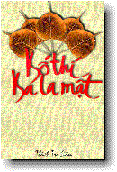

|  | Bố thí Ba-la-mậtThích Trí Siêu |
1. Mở ÐầuÐa số chúng ta ngày nay hầu như không còn biết bố thí, cúng dường một cách trong sạch và lợi ích nữa! Bố thí là bố thí chứ có gì mà trong sạch với không trong sạch? Nói như vậy không phải là Phật tử! Nếu không phải Phật tử thì muốn nói sao cũng được, nhưng nếu là con Phật thì cần phải học đạo, hiểu đến nơi đến chốn. Có nhiều người trong chúng ta thường hãnh diện nói rằng: 'Tôi tu lâu, ăn chay trường, tụng kinh mấy chục năm rồi, biết Hòa Thượng này Hòa Thượng nọ từ lúc các vị ấy mới tu, chùa này là do tôi giúp từ lúc mới lập,..., và đa số đều là Bồ Tát tại gia (tức là thọ Bồ Tát giới). Thọ Bồ Tát giới tức là muốn bước trên Bồ Tát đạo; và Bồ Tát đạo thì gồm có Lục độ (Ba La Mật). Trong đó thì Bố thí đứng đầu. Bồ Tát mà không biết bố thí thì đó không phải là Bồ Tát. Vậy Bố thí là gì? Có mấy loại Bố thí? Phải Bố thí những gì: Bố thí làm sao, khi nào,...? Trước khi đi vào giải đáp xin đọc giả phá bỏ thành kiến sai lầm xưa nay, cho rằng Bố thí là đem tiền cúng chùa, cúng Thầy, đó chỉ là một hình thức nhỏ của sự Bố thí. Không những Phật tử tại gia hiểu lầm mà ngay cả giới xuất gia cũng lơ là hay cố ý chỉ muốn dạy cho Phật tử sự Bố thí đó mà thôi, nên luôn luôn kêu gọi Phật tử phát tâm Bồ Tát (phát tài) cúng chùa, cúng Phật... Riết rồi Phật tử không dám đến chùa nữa, vì sợ đến thì phải cúng, nếu không cúng thì sợ tội, nên hay hơn hết là ở nhà cho xong. Ðó là nói người biết sợ tội phước, còn có những người học Phật mà bất chấp tội phước, hoặc quá si mê, là những người hay đi rêu rao chùa này nhiều tiền, chùa kia ít tiền, Thầy này giàu, Thầy kia nghèo,... Nói cho sướng cái miệng mà đâu có hay là mình đang tạo khẩu nghiệp, đó là chưa kể đã phạm vào các giới trọng, giới khinh của Bồ Tát. Chùa là gì? Tại sao phải đến chùa? Là Phật tử, chúng ta ai cũng biết rõ lịch sử của đức Phật Thích Ca, biết Tứ Diệu Ðế, biết đời là khổ, biết quay về nương tựa nơi Tam Bảo (Phật, Pháp, Tăng). Chùa là nơi tượng trưng cho Tam Bảo, nhưng nơi nào chỉ có tượng Phật và kinh sách thôi mà không có chư Tăng thì không được gọi là Tam Bảo; và đúng lý ra thì chùa phải là nơi thoát tục của người trần tục. Khi bước chân vào một ngôi chùa, với không khí thoảng mùi hương thơm, với tiếng chuông tiếng mõ, ta sẽ cảm thấy tất cả những ưu phiền, bon chen của cuộc sống bên ngoài lắng xuống và tâm hồn ta trở nên lâng lâng thoát tục. Trước khi vào chùa, ta đầy phiền não, vào đến chùa được tắm mình trong sự thanh tịnh (sự trở về với chính ta), nên phiền não tiêu tan, và khi ra về ta cũng đem luôn sự thanh tịnh của chùa về tưới vào gia đình. Ðược như vậy thì ta là người biết đến chùa. Nhưng trên thực tế thì không phải như vậy. Mặc dù thân của ta vẫn đến chùa đều đều, nhưng ta không còn biết đến chùa thực sự là gì nữa! Chúng ta đã biến cảnh chùa chiền thành chợ chiều. Thay vì đến chùa để lấy sự thanh tịnh, ta lại đi đem những ô uế và phiền não nhét đầy vào chùa. Thay vì đến chùa để hỏi đạo, ta lại đem chuyện đời kể cho quý Thầy nghe; thay vì đến chùa làm công quả kiếm chút phước, ta lại đi tạo khẩu nghiệp nói chuyện người này, kể chuyện người kia. Rồi cứ thế, ngày qua tháng lại, một ngày kia ta sực tỉnh, nhận thấy rằng từ bao lâu nay ta đến chùa mà chả học được gì hữu ích cả. Kinh băng, sách Phật chất đầy nhà, vậy mà tâm ta vẫn không an, và hình như tham, sân, si vẫn còn đầy, thế rồi ta hoảng sợ vội vàng chạy đến chùa để cầu cứu, thì ô hay! Sao chùa bây giờ giống như cái chợ chiều? Tìm các Thầy để hỏi đạo thì các Thầy chỉ nói chuyện đời, nếu không thì lại kêu gọi ta phát tâm cúng dường... Thế rồi ta chán nản bỏ ra về, ghê tởm và xa lánh chùa! Lòng tin nơi Tam Bảo của ta càng ngày càng giảm. Ta nào có biết đâu rằng tất cả những gì xảy đến cho ta đều có nguyên nhân, đâu phải tự nhiên mà có; mà nguyên nhân thủ phạm lại chính là Ta. Vì ta không biết điều đó nên ta rao rằng: chùa này làm tiền, chùa kia làm tiền! Vì sao lại có tình trạng tệ hại như vậy? Tại vì trước kia đến chùa ta không chịu học đạo cho đàng hoàng, chỉ học lý thuyết suông cho vui, nên ta đã bố thí cúng dường không đúng đắn, không trong sạch. Chính chúng ta đã biến cái chùa thành cái chợ, thì nay cũng chính chúng ta phải biến cái chợ thành cái chùa như thuở nào, và nhất là những ai có thọ Bồ Tát giới. Công việc này không phải một người có thể làm nỗi, mà tất cả hàng Phật tử tại gia cũng như xuất gia. Tuy nhiên điều đầu tiên là chúng ta phải ý thức được sự tệ hại và đình trệ của Phật giáo Việt Nam (hải ngoại). Có ý thức được thì chúng ta mới mong muốn sửa đổi, còn nếu không thì chẳng có gì để nói nữa cả. Nhược bằng ý thức được thì ta hãy lên đường làm lại cuộc đời Phật tử của mình, cũng tức là cuộc đời của Phật Giáo Việt Nam vậy. Ta hãy can đảm đừng ngại ngùng học lại những giáo lý căn bản, rồi đem ra áp dụng vào đời sống hằng ngày. Chúng ta có thói quen là thân thì ngồi dưới đất, mà tâm trí thì cứ tưởng ở trên mây. Có nghĩa là sao? Nghĩa là trình độ tu học thì rất kém (tham, sân, si chưa trừ) mà lại hay nói những lý lẽ cao siêu, chỉ thích tụng kinh Ðại Ðại Thừa Ðại Ðại Phương Quảng, v.v... Nhất là có những Kinh nào nguyên văn bằng chữ Hán thì ta lại mù tịt, không hiểu gì cả. Ta quên mất rằng đức Phật có nói: 'Nếu tin ta mà không hiểu ta thì đó là hủy báng ta,' vậy nếu ta tụng kinh Phật mà không hiểu thì không biết một ngày ta đã hủy báng Phật bao nhiêu lần rồi? Với mục đích giúp cho đọc giả nào muốn làm lại cuộc đời Phật tử của mình, tôi xin biên soạn về 'Bố thí Ba La Mật', là một trong sáu hạnh của Bồ Tát. Vì sao lại chỉ nói về Bố Thí thôi mà không nói cả sáu hạnh của Bồ Tát? Ðó là tùy tình cảnh, tùy thời. Tùy tình cảnh vì Bố Thí là hạnh đầu tiên trong Lục Ðộ và nó dễ thực hành cho Phật tử tại gia. Còn tùy thời là vì ngày nay rất nhiều Phật tử than phiền là chùa này nhiều tiền, hoặc Thầy này giàu, Thầy kia nghèo,... Bố thí mà biết cách thì được phước đức vô biên cho cả người cho lẫn người nhận. Còn Bố thí mà không biết cách thì chỉ có một bên hoặc chả có bên nào được lợi cả. Do đó, Bố thí mà không biết cách thì tốt hơn là đừng bố thí! -oOo- Xem tiếp: Source: Phat-Hoc, http://www.phathoc.org/ , and LotusNet, http://www.lotuspro.net/ |
| [Main Index] | Last updated: 04-06-2000 |
Web
master: binh_anson@yahoo.com |